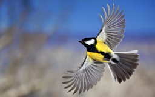
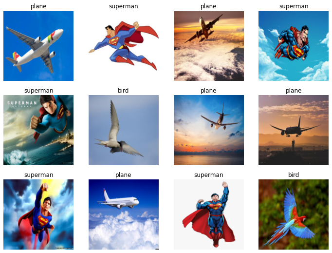

!pwd/content
!pwd/contentHere’s the process * Choose categories- bird, plane, superman * Download 1 image for each and check they’re ok * Download 30 images for each into directories named by category * Check images are valid * Download pre-trained model * Feed dir into model, fine tune, check performance
!pip install -Uqq fastai duckduckgo_search |████████████████████████████████| 96 kB 7.0 MB/s eta 0:00:01
|████████████████████████████████| 62 kB 1.7 MB/s eta 0:00:01
ERROR: pip's dependency resolver does not currently take into account all the packages that are installed. This behaviour is the source of the following dependency conflicts.
flask 1.1.4 requires click<8.0,>=5.1, but you have click 8.1.3 which is incompatible.from duckduckgo_search import ddg_images
from fastcore.all import *bird = ddg_images('bird', max_results=2).itemgot('image') on L to extract the urls onlybird[{'title': 'Pair these bird events with Great Backyard Bird Count - pennlive.com',
'image': 'https://www.pennlive.com/resizer/UeXGnWaOE07lC4n_J5lJ0a1M-_M=/1280x0/smart/advancelocal-adapter-image-uploads.s3.amazonaws.com/image.pennlive.com/home/penn-media/width2048/img/entertainment_impact/photo/shutterstock-58364638jpg-6932548563f01558.jpg',
'thumbnail': 'https://tse1.mm.bing.net/th?id=OIP.tAh4IvhbxtzpJUCMwC-djQHaGe&pid=Api',
'url': 'https://www.pennlive.com/entertainment/2015/02/pair_these_bird_events_with_gr.html',
'height': 1118,
'width': 1280,
'source': 'Bing'},
{'title': "Help Count Birds for Science during Audubon's Annual Christmas Bird ...",
'image': 'https://www.mississippiriverdelta.org/files/2015/12/BUFH-wing-feathers.jpg',
'thumbnail': 'https://tse2.mm.bing.net/th?id=OIP.1xYUOvqR7iH9FMoKBawtIAHaF1&pid=Api',
'url': 'https://mississippiriverdelta.org/help-count-birds-for-science-during-audubons-annual-christmas-bird-count/',
'height': 1340,
'width': 1700,
'source': 'Bing'}]L(bird).itemgot('image')(#2) ['https://www.pennlive.com/resizer/UeXGnWaOE07lC4n_J5lJ0a1M-_M=/1280x0/smart/advancelocal-adapter-image-uploads.s3.amazonaws.com/image.pennlive.com/home/penn-media/width2048/img/entertainment_impact/photo/shutterstock-58364638jpg-6932548563f01558.jpg','https://www.mississippiriverdelta.org/files/2015/12/BUFH-wing-feathers.jpg']Build search_images using these
def search_images(keyword, max_images=30):
return L(ddg_images(keyword, max_results=max_images)).itemgot('image')url = search_images('flying bird', 1)
url(#1) ['http://1.bp.blogspot.com/-6anwlEoD-Ec/UmvgxLKbxsI/AAAAAAAAZhQ/z64F1RGv7iU/s1600/Flying+Birds+Wallpapers+%25283%2529.jpg']from fastdownload import download_url
download_url(url[0], dest='bird.jpg', show_progress=False)Path('bird.jpg')from fastai.vision.all import *
im = Image.open('bird.jpg')
im.to_thumb(256,256)
download_url(search_images('flying plane', 1)[0], dest='plane.jpg', show_progress=False)
Image.open('plane.jpg').to_thumb(256, 256)download_url(search_images('flying superman', 1)[0], dest='superman.jpg', show_progress=False)
Image.open('superman.jpg').to_thumb(256, 256)import ossearches = ['bird', 'plane', 'superman']
path = Path('is_that_a')
for s in searches:
dest = (path/s)
dest.mkdir(exist_ok=True, parents=True)
download_images(dest, urls=search_images(f'flying {s}'))
resize_images(path/s, max_size=400, dest=path/s)failed = verify_images(get_image_files(path))
failed.map(Path.unlink)
len(failed)0dls = DataBlock(blocks=(ImageBlock, CategoryBlock),
get_items=get_image_files,
splitter=RandomSplitter(valid_pct=0.2, seed=42),
get_y=parent_label,
item_tfms=[Resize(192, method='squish')]
).dataloaders(path, bs=32)
dls.show_batch(max_n=12)
learn = vision_learner(dls, resnet18, metrics=error_rate)
learn.fine_tune(3)/usr/local/lib/python3.7/dist-packages/torchvision/models/_utils.py:209: UserWarning: The parameter 'pretrained' is deprecated since 0.13 and will be removed in 0.15, please use 'weights' instead.
f"The parameter '{pretrained_param}' is deprecated since 0.13 and will be removed in 0.15, "
/usr/local/lib/python3.7/dist-packages/torchvision/models/_utils.py:223: UserWarning: Arguments other than a weight enum or `None` for 'weights' are deprecated since 0.13 and will be removed in 0.15. The current behavior is equivalent to passing `weights=ResNet18_Weights.IMAGENET1K_V1`. You can also use `weights=ResNet18_Weights.DEFAULT` to get the most up-to-date weights.
warnings.warn(msg)
Downloading: "https://download.pytorch.org/models/resnet18-f37072fd.pth" to /root/.cache/torch/hub/checkpoints/resnet18-f37072fd.pth| epoch | train_loss | valid_loss | error_rate | time |
|---|---|---|---|---|
| 0 | 2.123390 | 2.041406 | 0.647059 | 00:08 |
| epoch | train_loss | valid_loss | error_rate | time |
|---|---|---|---|---|
| 0 | 1.009901 | 0.819089 | 0.411765 | 00:11 |
| 1 | 0.627152 | 0.066545 | 0.000000 | 00:13 |
| 2 | 0.439642 | 0.016115 | 0.000000 | 00:18 |
is_that_a,_,probs = learn.predict(PILImage.create('bird.jpg'))
print(f"That is a: {is_that_a}.")
print(f"Probability: {probs[0]:.4f}")That is a: bird.
Probability: 0.9775is_that_a,_,probs = learn.predict(PILImage.create('plane.jpg'))
print(f"That is a: {is_that_a}.")
print(f"Probability: {probs[1]:.4f}")That is a: plane.
Probability: 0.9995is_that_a,_,probs = learn.predict(PILImage.create('superman.jpg'))
print(f"That is a: {is_that_a}.")
print(f"Probability: {probs[2]:.4f}")That is a: superman.
Probability: 0.9994